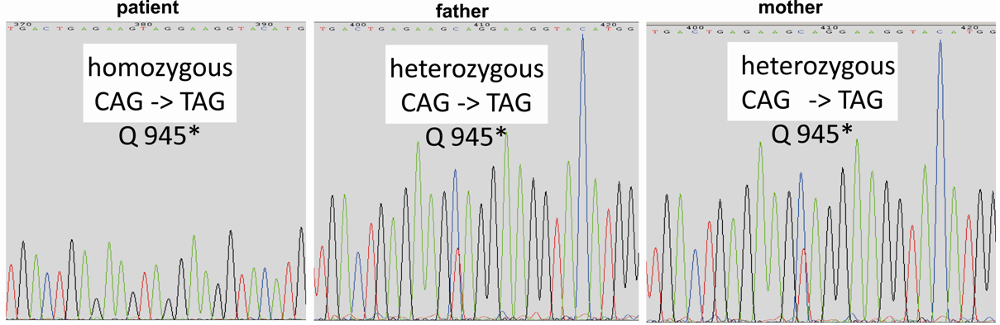

Many DNA variant callers suggest different alignment pre-processing steps before the actual computation of single-nucleotide variants (SNVs), short insertions and deletions (InDels) and large structural variants (SVs). Typical pre-processing steps are duplicate removal, local InDel realignment and the trimming of low quality bases [GATK] [FASTX] [Trimmomatic] [Picard]. Some of these steps can be carried out before or after the initial alignment. For most variant callers a fundamental pre-requisite is the removal of duplicate reads:
java -jar ${PI}/MarkDuplicates.jar I=align.sort.bam O=align.rmdup.bam M=duplicates.txt AS=true
samtools index align.rmdup.bam
less duplicates.txt
The picard online documentation explains the metrics produced by MarkDuplicates [PicardDoc]. The histogram at the bottom of the file approximates the estimated increase in non-redundant sequencing coverage if we double, triple, etc. the raw sequencing data. This histogram is especially useful to estimate whether it makes sense to sequence a given library deeper or not.
Samtools mpileup is one option to call SNVs in a sample. Please note that the down-sampling of the course data to speed-up the analyses obviously affects the sensitivity and specificity of SNV calling but still serves the purpose of illustrating the general workflow used for SNV calling. Mpileup just needs the reference and the bam file to call SNVs. The output is in vcf format (variant-call-format).
samtools mpileup -ugf chr7.fa align.rmdup.bam | bcftools view -cvg - > snv.raw.vcf
The above command should run for about 10 minutes. Samtools mpileup also offers a simple perl script to filter SNVs for low coverage, low mapping quality, adjacent gaps and similar biases that are known to be related to an increased false positive rate of SNV calls. For this course, we will just filter SNVs with a coverage below 5.
perl ./bin/vcfutils.pl varFilter -d 5 snv.raw.vcf > snv.vcf
A vcf file has multiple header lines starting with a hash # sign. Below the header line is one record for each SNV and InDel. The record format is described in the below table:
Col Field Description 1 CHROM Chromosome name 2 POS 1-based position. For an indel, this is the position preceding the indel. 3 ID Variant identifier. Usually the dbSNP rsID. 4 REF Reference sequence at POS involved in the variant. For a SNP, it is a single base. 5 ALT Comma delimited list of alternative sequence(s). 6 QUAL Phred-scaled probability of all samples being homozygous reference. 7 FILTER Semicolon delimited list of filters that the variant fails to pass. 8 INFO Semicolon delimited list of variant information. 9 FORMAT Colon delimited list of the format of individual genotypes in the following fields. 10 +Sample(s) Individual genotype information defined by FORMAT.
You can look at the header of the vcf file using grep:
grep "^#" snv.vcf
If you want to include the first SNV record you can use:
grep "^#" -A 1 snv.vcf
The samtools package also has a simple alignment viewer called samtools tview. In that viewer, a dot or a comma in the read represents a match to the reference, either on the forward (dot) or reverse (comma) strand. Any other DNA nucleotide that appears in the read is a mismatch. Upper case letters are mismatches on the forward strand whereas lower case letters are mismatches on the reverse strand. Pick a few SNVs and InDels randomly and inspect them in the viewer by running the commands below. Once you are in the viewer press ‘g’ and enter the coordinates of the SNV, e.g. ‘chr7:72857049’. To exit the viewer press ‘q’. Two variants that look reasonably confident from the alignment are below.
egrep "72857049|129091615" snv.vcf
samtools tview align.rmdup.bam chr7.fa
If you are working with multiple VCF files from different samples then merging VCFs, filtering and subsetting these files is a common task that can be accomplished using VCFtools [VCFtools].
The raw SNV calls do contain false positives, which may be due to intrinsic properties of the sequencing data such as poor base qualities or due to segmental duplications, repeats or similar reference biases. Annotating the SNV calls with these reference features, such as segmental duplications, is one way to flag these SNVs as less confident. In addition, we also need an adequate SNV annotation that allows us to quickly identify interesting mutations such as coding missense and nonsense mutations. Different tools are available for this kind of SNV annotation such as SnpEff [SnpEff] and Annovar [Annovar]. We will use Annovar in the following and the scripts required for annovar are in the bin directory of the course data. First we convert the SNVs to the input format of Annovar:
./bin/convert2annovar.pl --format vcf4 snv.vcf > snv.av
The annovar format is very similar to vcf. The columns are chr, start, end, reference allele, alternative allele, zygosity, quality and depth. Annovar relies on the annotation databases of the UCSC genome browser and thus, these databases need to be downloaded once. The download commands are below. To save time the databases have already been downloaded prior to the course so you can skip this step.
mkdir hg19db
./bin/annotate_variation.pl --webfrom annovar --buildver hg19 --downdb refGene hg19db/
Using these mRNA sequences the SNVs are now categorized into synonymous and non-synonymous SNVs:
./bin/annotate_variation.pl --buildver hg19 --outfile snv --hgvs snv.av hg19db/
Annovar creates two output files snv.variant_function and snv.exonic_variant_function. The variant function file contains all variants prefixed by their location in the genome (intergenic, exonic, intronic, etc.).
cut -f 1 snv.variant_function | sort | uniq -c
The exonic variant function file further classifies the exonic SNVs into the type of coding change (synonymous, non-synonymous, frameshift, etc.) they cause.
cut -f 2 snv.exonic_variant_function | sort | uniq -c
In order to further filter the SNVs one would like to distinguish most likely polymorphic SNPs from real mutations. The 1000 Genomes data [GP] and/or dbSNP [dbSNP] can be used for this. Again, we have pre-downloaded the necessary dbSNP database with the below command that you can skip:
./bin/annotate_variation.pl --webfrom ucsc --buildver hg19 --downdb snp137 hg19db/
Then the initial SNVs can be filtered against dbSNP using the following command:
./bin/annotate_variation.pl --buildver hg19 --filter --dbtype snp137 snv.av hg19db/
This filtering creates two files, one with all the SNVs present in dbSNP, called snv.av.hg19_snp137_dropped, and one file with the remaining SNVs, called snv.av.hg19_snp137_filtered.
head snv.av.hg19_snp137_*
wc -l snv.av.hg19_snp137_*
As a first initial candidate mutation set one could now use all the SNVs that are not present in dbSNP and then search for the ones that are non-synonymous, stopgain or stoploss.
grep -Ff snv.av.hg19_snp137_filtered snv.exonic_variant_function > candidateSNVs.tsv
egrep "nonsynonymous|stopgain|stoploss" candidateSNVs.tsv
Since dbSNP does contain some SNVs that are known to be involved in diseases one could alternatively also use the 1000 Genomes data and exlcude all SNVs with an alternative allele frequency >1% in the 1000 Genomes population. Assuming this is an autosomal recessive disorder one could now select candidate genes with at least 2 filtered SNVs. For a consanguineous autosomal recessive disorder one could further filter for homozygous SNVs using:
egrep "nonsynonymous|stopgain|stoploss" candidateSNVs.tsv | grep "hom"
To verify that the stopgain CARD11 mutation follows indeed a consanguineous autosomal recessive disorder one should sequence the SNV in the parents using Sanger sequencing. The PCR traces are shown below.
This concludes the single-nucleotide variant calling practical. I hope you enjoyed it!